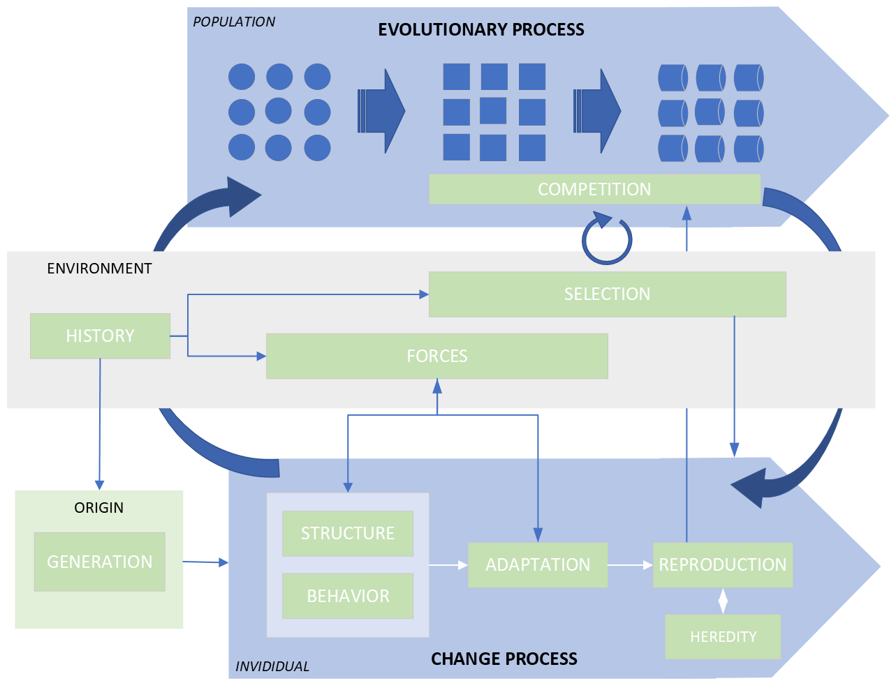
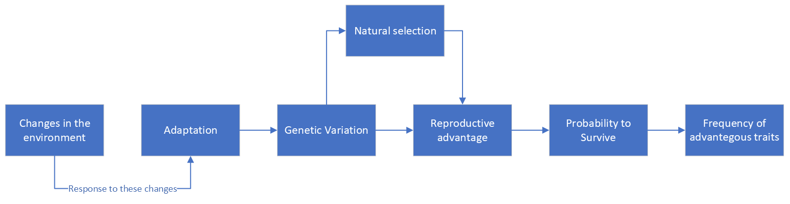
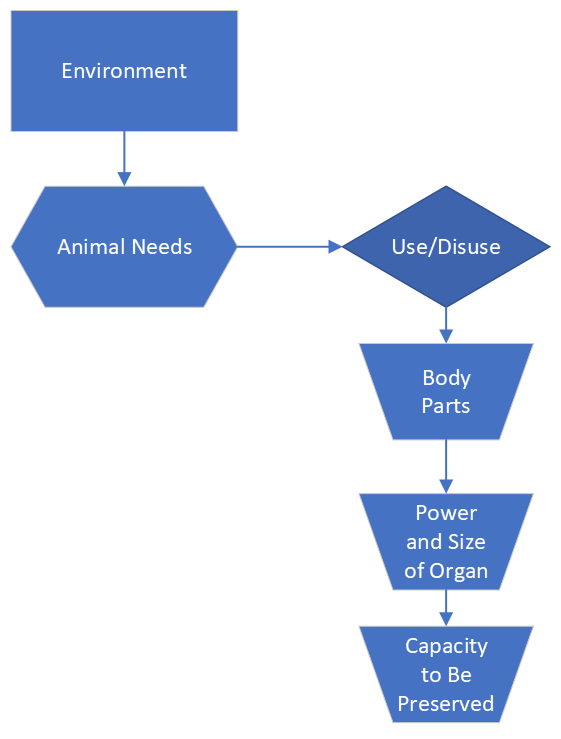
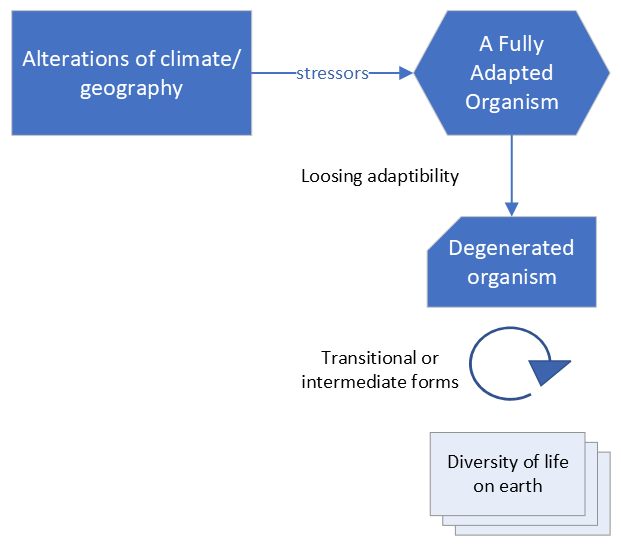

4 Description
It is important to clearly establish the differences that distinguish an evolutionary process from another of change or transformation. Although these are related concepts in evolutionary theory, they actually denote different processes that act on different agents, which is why they tend to be confusing even among some specialists.
Evolution is an overarching process that drives change in populations over generations. This means that evolutionary processes do not operate at the level of a specific individual or organism, which would only change or transform. Evolution therefore represents the cumulative effect of the inherited changes made by the characteristics of the individuals of a population, on which a selection process operates affecting the frequency of traits within a population over time. Change encompasses a broad spectrum of morphological or behavioral alterations within individuals from a variety of factors, including environmental pressures and reproductive patterns. Transformation suggests more profound or significant shifts in form, structure or function of individuals.
The idea of individualism is confronted with that of populationism. Darwin’s theory is a mix of both: natural selection operates at the level of the individual organism, regulating the frequencies of traits within a population over time. Populations are the units of evolution.
Another important approach to take into account is the one that confronts the idea of evolutionism with that of progressionism. The first refers to a change that is non-directional, while the second implies a direction in evolution, usually following a teleological change.

4.1 Evolution
A simple evolutionary framework works like this:
Sudden or slow changes in the environment trigger a response in the organism that involves an adaptation, which means the loss, modification or creation of new individual traits. When the new traits are incorporated into the genetic variation of the population, the process of natural selection operates to favor some over others and derive a greater or lesser reproductive advantage to those individuals that have incorporated those new traits. This favoring or penalizing process carried out by the environment determines the greater or lesser ability of an organism to survive. This favoring or penalizing process carried out by the environment determines the greater or lesser ability of an organism to survive. At the end of the process the frequency of advantageous qualities (which are those that offer a greater ability to survive) will be higher, and those that offer less ability to survive have a lower frequency.

In the process of evolution is worth consider the role of feedback loops between mental an social evolution (as imagined by H.Spencer). For this author a more complex society is a stimulus for more mental development. This is the foundation of evolutionary psychology and of sociobiology.
How is the mechanism of evolution: cyclic vs. continuous?
The role of the organism to focus in new habits and become an active creative agent in charge of its own destiny is an idea of H.Spencer.This takes the evolutionary analyst to think about the role of knowledge and learning to change habits and create new instincts, in the end, to unfold a process of self-improvement (which is Lamarckian).
Study of the role of innovation and learning, and of free enterprise of individuals to cope with a competitive environment (H.Spencer). Linked to the above is also the discussion about the role of the government and the state as instruments that affect the environment.
4.1.1 Competition
The evolutionary analyst must understand competition as that within an ecology based on struggle. These are three fundamental terms to understand the evolutionary analysis framework.
It is important to stop for a moment to understand the implications of the concept of ecology to explain an evolutionary system. To achieve this, a common approach has been to use biogeography as a way of knowing about the spread of relationships and how species compete to occupy territory.
4.1.2 Convergent evolution (parallelism)
This conception of the evolutionary process implies the existence of a parallelism between independent evolutionary trajectories.
The environmental challenges over species A and B, make those species develop the sames structures and behaviors, which may have an impact on morphology, physiology, and life history traits. This continues forward with the same genetic pathways (even the same phenotypic traits), the consequence being on predictability/replicability of evolution, namely, the same solutions given to similar selective pressures.
This opens the debate between uniformitarianism (and graduation) vs catastrophism. The former is Lyell’s idea of the same processes of change today than ever. The later is about sudden changes, such as catastrophic events. ### Lamarckian approach The Lamarckian approach to evolution is based on the changes posed by the environment that determine (influence) the needs of organisms. These needs, when varying, affect the degree of use or disuse of certain organs (as is the case of a giraffe) and hence the greater or lesser development of certain parts of the body. This greater or lesser development of the parts of the body in turn affects the size and power of the organism’s organs and, ultimately, the organism’s ability to be preserved through reproduction.

4.1.3 Buffon’s perfect adapted organism
According to this framework of thought, only when alterations in the environment occur, due to alterations in climate or geography, do variations appear. This is the moment when natural selection operates to adapt the species to new conditions.
Environmental stressors cause the perfectly adapted organism to begin a process of degeneration and lose its original adaptability and perfection. This process that takes place over time gives rise to intermediate or transitional forms, which ultimately explain the diversity of life on earth.
 ### Spencer’s framework Herbert Spencer’s analytical framework establishes that new situations in the environment give rise to organisms having to learn how to cope with them. From this learning is derived the development of new instincts, which are more complex human faculties, which allow the organism to be more prepared to face the “survival of the fittest.”
4.2 Origin
The problem of the origin is associated with that of the “Problem of Generation” and its accompanying theories of generation. An analysis of the origin involves the need to explore for evidence of the past in search for a better system (what are the sources of evidence?).
The following are some of the theories to consider when addressing the problem of generation of the original structure:
Spontaneous generation (often only for the simplest forms)
Preformationism (forms that are predetermined)
Pre-existence
A mold that is fixed.
After the evidence of generation has become evident, the next step is to continue understanding the trend towards higher levels of complexity, and thee material forces that have an influence on the trend.
When the evolutionary analyst deals with the problem of generation she must attend to the developmental process, and the constraints that it can impose on the rest of the evolutionary process. These constraints might introduce non-random variations, which can mean a way to direct. the course of evolution.
It is especially useful for the evolutionary analyst to consider that the unit (species) has a limited number of developmental pathways available and that the selection process would therefore be limited only to the possibility of tinkering with the details.
4.3 Structure
The main issue when considering Structure is to establish what the analytical unit of the system is (and what its main basic components are). In the case of natural evolutionary theory, this unit has traditionally been the organism, but also the population and later, after modern synthesis, the gene. It is the analyst’s job to determine as clearly as possible which is the “unit” on which the evolutionary analysis of the system will focus.
Thinking about population opened the door to a statistical model of explanation, which is opposed to the Newtonian view of law-based causation. This is the eternal debate between determinism and probabilism.
4.4 Environment
What is the role of the environment as a key impact driver?
The environment surrounding the chosen unit of analysis exerts various types of forces that act on the structure to provoke a process of change, with greater or lesser intensity, and in one direction or another.
The forces of change originating in the environment force the unit to change, so it is essential that the analyst analyze the environment in depth as a key impact driver, understanding the role of the environment in the evolutionary process of the system.
The connection between the environment and the origin is a key issue as well, since the direction of the change, if it exists, and the intensity or depth of the change that may take place in the structure of the unit may sometimes depend on it.
This opens the debate between directionalism vs catastrophism in change. The latter is a random process of a destructive-creative type, in which change occurs in discontinuous steps and not through a gradual modification. The above opens the debate over purposeful changes (goal directed with no fixed line of advance- H. Spencer). The “struggle for existence” (Malthus) and the “survival of the fittest” (spencer).
One result of this view is whether evolution is linear (represented by a ladder) vs a tree (the idea of branching).
4.4.1 History
The system as the outcome of historical forces (Montesquieu).
The evolutionary analyst should elucidate whether the same forces of the past are those that govern the forces of today.
…And the vision of progress with phases of equilibrium as the whole moved from homogeneity to heterogeneity (E.Tylor)
(From Change) A good question to be reviewed by the evolutionary analyst: Is change a staged process, a process depending on historical forces?
4.4.2 Forces
It is important when analyzing the environment to specify the type of force applied to the structure, and its sources in said environment.
The forces that operate to produce evolutionary changes can be:
- Mutation
- Natural selection
- Genetic drift
Following another typology of change forces (which should be clarified):
- Hybridization
- Recombination
- Superposition
4.4.3 Selection
Is (natural) selection an episodic or a continuous process?
Are there periods of stable life where (natural) selection does not operate? or, Is (natural selection) always operating even in a stable environment?
A related approach is the one which considers selectionism vs. saltationism, and the extension with the role of mass extinctions. This would open the debate about evolution not always being progressive, and the acceptance that species could degenerate in less challenging lifestyle.
Is the (social) behavior programmed into us by natural selection? This would take us to the question of the development of social instincts.
The idea of struggle and death might have a positive purpose to keep species well adapted to a challenging environment (this is an utilitarian perspective). They might have a creative role (along with sex reproduction). Utilitarism in behavior and change/adaptation can be seen in J.S. Mill and W.Poley.
How evolution can produce advance in several directions (and not only towards humanity)?
The notion of selection used in this paper is that of having a balance between different characters within a population and not about the development of a murderous or aggressive instinct.
4.5 Behavior
Behavior is the way in which the structure articulates a response to the pressure exerted by environmental forces. Behavior establishes the boundaries within which the structure is capable of absorbing the forces of the environment and giving an adaptive response to the new situation or challenge posed by the environment.
The result of the behavior, which takes place within the boundaries established by the structure of the unit, can give rise to three types of adaptive responses by the system:
- New system qualities (traits)
- Loss of system qualities (traits)
- Modification of system qualities (traits)
What types of evolutionary behaviors can we find?:
- Cyclical
- Linear
- Random
Another way to
4.6 Change
Both the structure and the behavior are permanently immersed in a process of change, since the unit is always sensitive to the forces exerted on it originating in the environment. The overall evolutionary process of the unit will depend on the way in which these forces affect the unit.
The characterization of the change process must be carried out considering the following key dimensions, all of them closely related:
The direction or trend of the change process. This question has historically been part of the discussion on evolutionary theory, with different approaches given by different authors.
The change driver, whether it is a single one or a set of drivers that configure the change process. This opens the debate between configurable versus non-configurable change or, in other words, whether change is manipulable (Lamarckian) or non-manipulable (Darwinian).
The mechanics of the process, whether gradual and slow, or sudden/abrupt and in jumps, or any intermediate alternative in the continuum formed by these two extremes.
The time scale on which the change process takes place. This can develop over a vast amount of time or a small amount of time, or somewhere in between.
Open-ended process based on trial-and-error vs. directed (fixed) process
Some important considerations to keep in mind are that the process of change always implies progress, but it can also involve regression. Therefore, the evolutionary analyst faces both forward and backward movements.This goes hand in hand with the idea of continuous progress, as opposed to progress in jumps or saltation.
A good question to be reviewed by the evolutionary analyst: Is change a staged process, a process depending on historical forces?
What is the role of the state of technology to explain the change process, and that of diffusion of knowledge?
Be aware that the process of accumulation of change can lead to the formation of new organs (new structure), according to E.Darwin.
4.6.1 Mutations
Mutations play a role in the process of change, specifically they provide a source of random variation, but they do not generate new species. Mutations generate variation and natural selection then shapes the distribution of traits within a population over time.
It must be taken into account that not all genes that undergo a mutation produce drastic changes in the organism (individual); in reality, most mutations are neutral and do not produce noticeable changes. The evolutionary analyst will have to take into account that the environment plays a role in determining which mutated characters are those that spread in the population (this is nothing more than the phenomenon of selection).
Maybe the concept of mutation is for more drastic transformations leading to new species, accepting that adaptation and selection might be irrelevant.
Can the evolutionary analyst evaluate the idea that there might be internal forces generating characters unrelated to the organism’s needs? A related consideration may take us to consider that evolutionary changes occur in a predetermined manner driven by internal factors (this is called “directed evolution”). This is what has historically been called orthogenesis (F.Eimer).
The above opens involves fixity of direction, and if variation is also considered as not random, therefore there is no need for adaptation. According to this vision the environment would not have any role in evolution. Evolution might come to happen beyond what is functionally needed and not because environmental factors.
Does “overdevelopment theory” apply (A.Hyatt)?
4.7 Reproduction
Currently there is a generalized consensus in accepting the reproductive success of the unit as the main driver of selection, that is, the ability to transmit the genetic load of the unit to the offspring (this perspective has been criticised by Stephen Jay Gould). This modern vision of evolution has not always been like this, so less than 100 years ago success was considered to be found in the ability to adapt to the environment.
Selection based on reproductive success has opened the doors to new avenues of interest and study, which now focus more on sexual selection, in the case of natural systems, or on the reproduction mechanisms of any other system. An interesting factor that every evolutionary analyst may want to analyze is the role of geographic barriers to explain the way in which species multiply.
Let us also think that the selection process that takes place in the environment is continuous and is not interrupted even when the environment is stable. In other words, competition between some units and others for scarce resources never stops, even if the environment appears stable. The analogy of the Red Queen hypothesis, introduced by Van Halen Van Valen (2014) to denote that in the evolutionary race between organisms species must constantly adapt and evolve just to maintain their relative fitness within an ever-changing environment, it is good to explain that units must remain constantly improving or, otherwise, they will be outstripped by their rivals.
4.7.1 Reproductive strategies
What are the reproductive strategies in a population? There are a few: parthenogensis, hermaphroditism, R-selected, K-selected, Sewel parity, itero parity, mono/poly gams, hybridization, transmutation, pangenesis, orthogenesis.
Germ (hard heredity) vs somato plasm (soft heredity).
4.7.2 Developmental constraints
The concept of developmental constraints affects in shaping the course of evolution. This is because the embryonic development process imposes a series of limitations on the types of changes that can occur in organisms over time. Patterns and constraints of embryonic development can provide insights into the mechanisms underlying evolutionary change and diversification.
4.7.3 Evo-devo approach
This approach, abandoned by current biologists, states that “ontogeny recapitulates phylogeny”. To understand it we must apply an “evo-devo” approach, meaning that embryological processes are part of evolutionary systems. This approach presents the idea of “blending” as the most convincing explanation of reproduction.
The “evo-devo” approach is based on Von Baer’s laws of embryology, which establish the following:
The basic structures of the body are established before specialized features appear
Embryos progress from general to specific characteristics as they develop
Homology vs analogy. These concepts establish that similar structures in different organisms are derived from a common ancestor.
In the case of homology a common ancestor “A” gives rise to a divergent pattern of species “B” and “C” that are specialized and have a different formation.
The pattern in the case of analogy is convergent, since two species “A” and “B” present the same organ with the same function.
4.7.4 Speciation and Specialization
The problem of speciation, that is, the division of a parent into several descendants. This is related to niche specialization and adaptation. Speciation is a fundamental mechanism of biological diversification.
Speciation leads to opportunities for specialization. Specialization within populations can contribute to reproductive isolation and promote speciation. It can also drive specialized traits that lead to divergence of populations over time.
In specialization a constant force, natural selection, determines the level of specialization, posing a pressure to specialize on species (in line with Adam Smith thought). The level of specialization influences the level of adaptation, which drives a divergent process of speciation.
Types of specialization: genetic, behavioral or ecological.
Role of geographical isolation of speciation There are two considerations in regards of the role of geographical isolation for speciation. One considers that specialization emerges without the need of geographical barriers, this is called sympatric speciation and is a radiply evolving type of speciation. Whereas allopatric speciation is much less rapid and more accepted today, and considers geographical barriers at the initial stage of species separation.
4.8 Heredity
Heredity is an accumulated effect (think of Lamarckian IAC).
Species have a gene pool that contain a large pool of genetic variability, in which many of these genes are simply useless or harmful. This gene pool is the raw material for selection.
An important task of the evolutionary analyst will be to determine if there are modifier genes (W.Castle) that influence the genes responsible for phenotypic characters.
Some Lamarckian stances might be worth an analysis. For example, the evolutionary analyst might consider that not all inherited acquired characteristics (IAC) are inherited by or as a response to changes in the environment.
The above might take of to the question if all evolution is mere trial-and-error, and how much is a deliberate choice of new habits in response to changes in the environment? Current thinking considers that not all needs to be inherited, so (to what extent) Can the environment influence heredity? (W.Bateson). But be advised that genetics is hostile to this idea.
Mendelian rule of “one single unit” in the germ plasm being responsible for determining the character and transmitting it to offspring. This would lead us to have to elucidate which genes (alleles) are dominant and which are recessive. This would lead us to have to elucidate which genes (alleles) are dominant and which are recessive, and thus explain that there are discontinuous characters (Bateson).
4.9 About the Evolutionary Analysis Model
The analysis model for evolutionary analysis must balance theory with observation (Herschel). In reality, theories derive their power from their ability to establish connections with other areas of study.
(In Structure) Thinking about population opened the door to a statistical model of explanation, which is opposed to the Newtonian view of law-based causation. This is the eternal debate between determinism (causation) and probabilism (statistical).
Other discussions apart from determinism vs probabilism established by evolutionary analysis are these:
- Predictive vs descriptive
- Reductionist vs holistic
- Macroscopic vs microscopic
The method of evolutionary analysis is that of a patient observer (Darwin), who poses some hypothetical situations and then uses the deductive method to try to verify them.